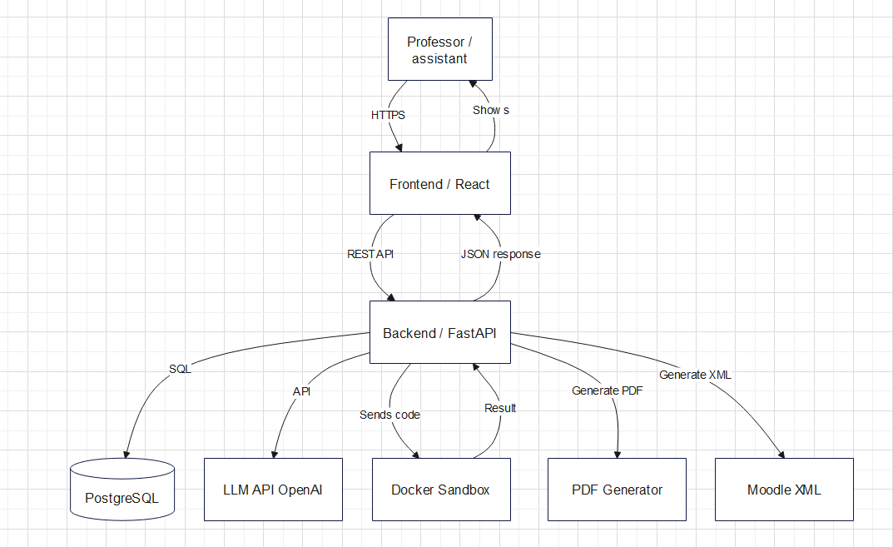
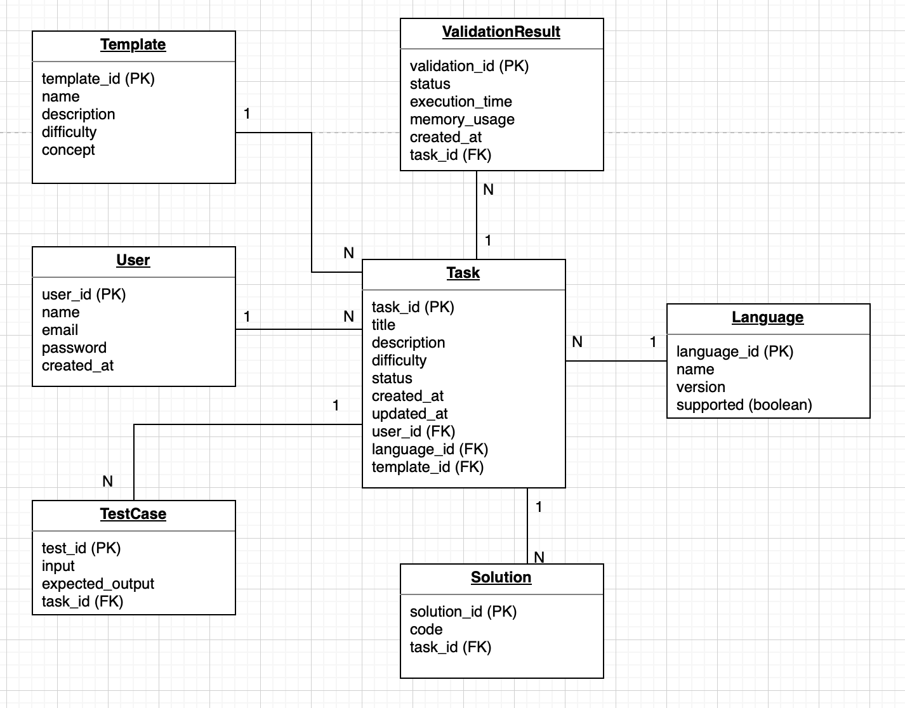
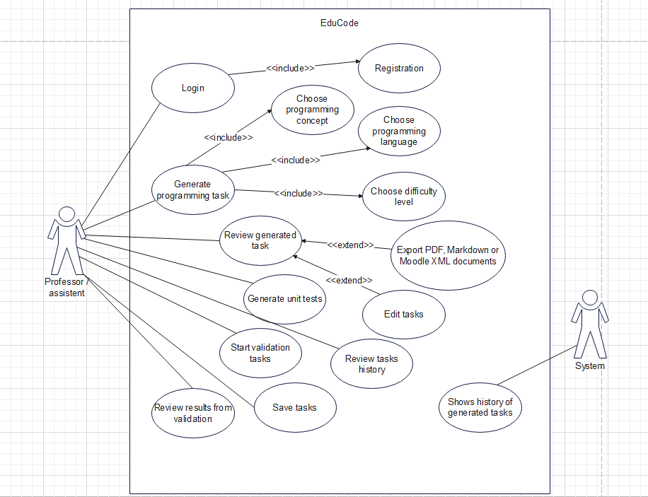
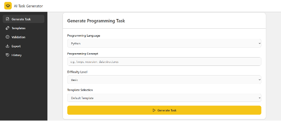
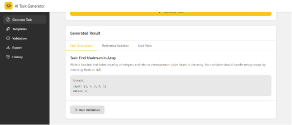
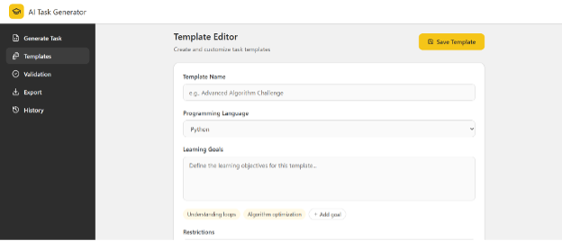
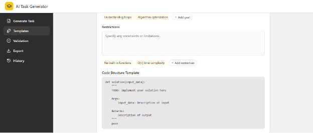
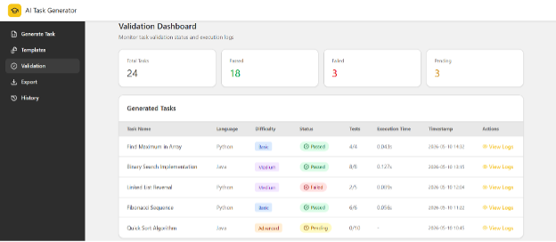
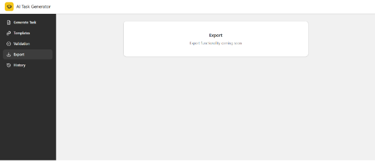
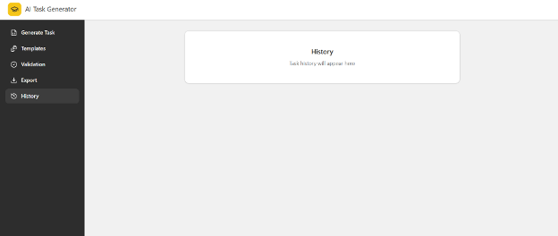

Modern System Architecture
React frontend, FastAPI backend, PostgreSQL database, OpenAI integration and Docker sandbox for secure code execution.
EduCode is an AI-powered educational platform that helps teachers and instructors automatically generate programming tasks, reference solutions, unit tests, and validation workflows using reusable templates.
EduCode follows a simple AI-driven workflow to generate complete programming exercises.
System applies a reusable educational template with rules and structure.
OpenAI generates task description, reference solution and unit tests.
Code is executed and tested inside a secure Docker sandbox environment.
Results are saved, stored in history and can be exported to Markdown, PDF or Moodle XML.

React frontend, FastAPI backend, PostgreSQL database, OpenAI integration and Docker sandbox for secure code execution.

Well-structured relational database with users, templates, tasks, test cases, reference solutions and validation results.

The diagram shows how professors and teaching assistants interact with the system — generating tasks, managing templates, validating solutions, exporting materials, and tracking history.
Generate exercises automatically based on topic, difficulty and learning goals.
Reusable templates with constraints, starter code and pedagogical settings.
Automatic creation of test cases and reference solutions.
Secure isolated environment for code execution and validation.
Export to PDF, Markdown and Moodle XML formats.
Full history of generated tasks, templates and validation logs.

Interface where teachers create new programming tasks with AI support.

Final output with task description, reference solution and unit tests.

Creating and editing reusable task templates.

Defining constraints, starter code and learning objectives.

Automatic testing of student solutions in Docker sandbox.

Export tasks to PDF, Markdown and Moodle XML.

Browse and reuse previously generated tasks and templates.
React • React Router • Axios • FastAPI • SQLite • OpenAI • Docker • JWT